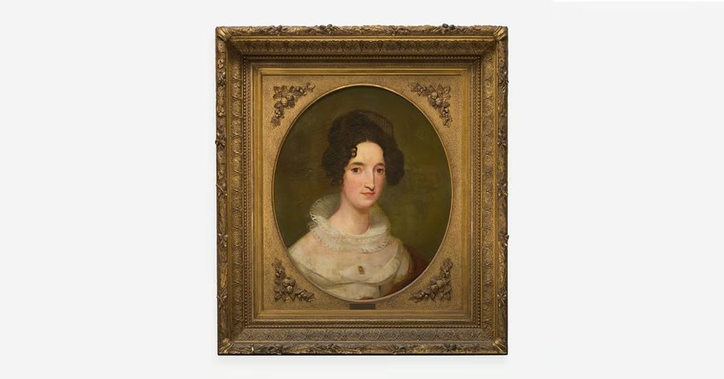
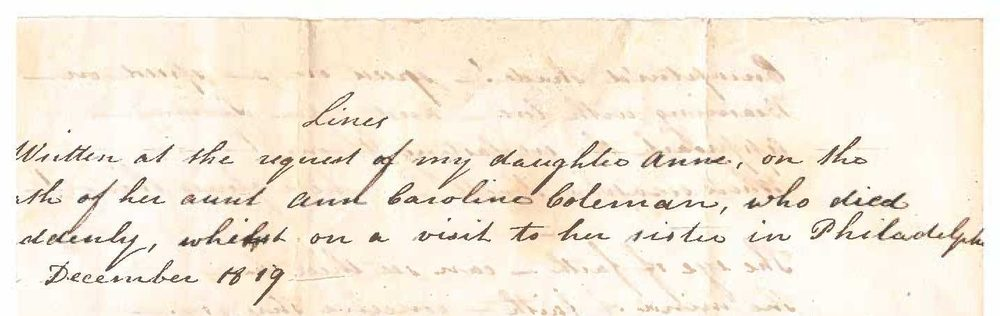
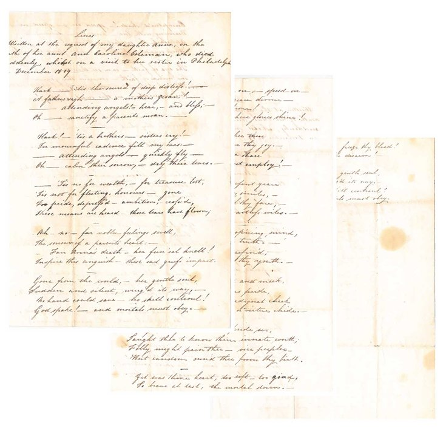
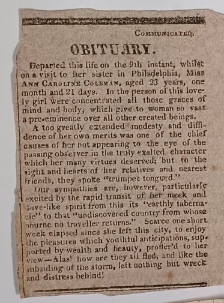

One assumes that most local history buffs have heard by now the tragic love story involving Anne Caroline Coleman and the nation's "bachelor president" James Buchanan.
The story has been published in numerous places, but before you tune out, thinking "…heard this one before…" please pause to enjoy something "new" and original.
Found recently among the "Coleman Collection" papers held at Elizabeth Furnace is a poem written by Anne's brother on the occasion of her death in 1819.

In a manuscript entitled "Lines," it begins with the preface "Written at the request of my daughter Anne, on the death of her aunt Ann [sic] Caroline Coleman, who died suddenly, whilst on a visit to her sister in Philadelphia in December 1819."
Anne had "fled" in despair to her sister Margaret's home, Strawberry Mansion in Philadelphia. Anne was one of the youngest of fourteen children, born in 1796. Margaret was 22 years older, married to Judge Joseph Hemphill.

Without further ado…
Hark, 'tis the sound of deep distress!
A father's sigh, a mother's groan!
Attending angels! Hear, and bless;
Oh, sanctify a parent's moan.
Hark! 'tis a brother's, sister's cry!
In mournful cadence fill my ears:
Attending angels, quickly fly,
Oh, calm their sorrow, dry their tears.
'Tis not for wealth, for treasure lost,
'Tis not for fleeting, honours gone
For pride, depress'd, ambition, cross'd,
These moans are heard, those tears have flown;
Ah, no: far nobler feelings swell,
The sorrows of a parent's heart:
Fair Anna's death, her fun'ral knell!
Inspire this anguish, these sad griefs impart.
Gone from the world, her gentle soul,
Sudden and silent, wing'd its way,
No hand could save, no skill control!
God spake! And mortals must obey.
Enraptur'd shade! Speed on, speed on,
Beaming with love, and grace divine,
Approach the everlasting throne!
Where seraphs dwell, where glories shine!
The eye of faith, can see thee thru
The mind of faith, conceive thy joy.
Beatific vision! Let me share
One moment, in this sweet employ!
I knew thee maid, when infant grace
Adorn'd thy cheek with rosy smiles,
Mark'd the young beauties of thy face,
Watch'd all thy little artless wiles.
When more matur'd, thy op'ning mind,
Yielded to science and to truth.
Soft piety, with taste refin'd
Mark'd all the footsteps of thy youth.
Retiring, modest, kind and meek,
Yet fill'd with all a virgin's pride,
'Twas thine to turn th'indignant cheek
Where scorn should point, or virtue chide.
The pride of soul, the pride sex,
Taught thee to know thine innate worth;
Folly might pain thee, vice perplex,
But candor own'd thee from thy birth.
Yet was thine heart, too soft, too good,
To brave at last, the mortal storm.
Did falsehood scare thee! Freeze thy blood!
Dissolve thy frame, thy life disarm!
But thou art gone, thy gentle soul,
Sudden and silent, wing'd its way.
No hand could save! No skill control!
God spake, and mortals must obey.

Closing Notes
As remarked in the series "Anne of Cornwall," the name "Ann(e) Caroline" appears frequently across the generations of the Coleman family tree, a source of confusion to the casual reader.
While the brother did not sign the manuscript or otherwise identify himself, the fact that his daughter "Ann" requested the verse helps to narrow down which of the nine brothers was the poet.
It could have been Edward (b. 1792) but more likely Thomas Bird Coleman, her brother closest in age, and whose young daughter Ann was older by 1 year at the time of her aunt's death. This Ann would grow up to marry Bradford Alden and is known to us as one of the "R. W. Coleman Heirs." She is perhaps best known for building "Alden Villa" as a wedding gift for her son Percy.
Whichever brother, he enjoyed writing poetry; another set of poems was found with the same handwriting, tributes to young men who were likely classmates or social friends.
Thanks to Craig Coleman of Elizabeth Furnace for permission to publish this poem.
We attempted to transcribe the hand-written poem faithful to the original punctuation.
Originally published on LebTown, March 12, 2025.